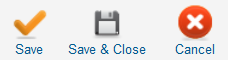

Here you can modify the CSS files of the various views of JEM directly in the backend.
Clinking a link on the right will take you to the edit screen.
Here you can modify the CSS files of the various views of JEM directly in the backend.
Clinking a link on the right will take you to the edit screen.
 Here you can modify the CSS files of the various views of JEM directly in the backend.
Clinking a link on the right will take you to the edit screen.
Here you can modify the CSS files of the various views of JEM directly in the backend.
Clinking a link on the right will take you to the edit screen.
Attention
Don't change anything if you don't know exactly what you do. Read the comments carefully and backup this file before you alter it.
To access this screen use: Components → JEM → Edit CSS
 Super Administrator
Super Administrator

Save: Saves the CSS file and returns to this screen.
Save & Close: Saves the CSS file and returns to the JEM screen.
Cancel: Go Back to the JEM screen without saving.